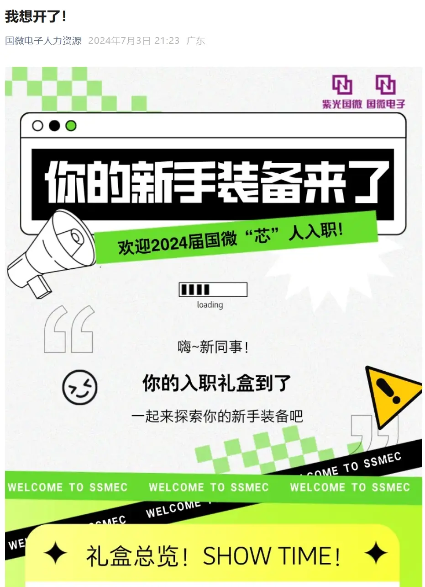

SELECTED WORK 04
EMPLOYER BRAND
& RECRUITMENT
雇主品牌与招聘传播
围绕校园招聘、新人入职与人才体验，参与内容策划、系列传播及视觉协同。招聘信息之外，也可以被看见真实的组织氛围与员工体验。



THE
STORY
RECRUITMENT / 04
A recruitment message can also
carry the feeling of a place.
从岗位开始，
让人也看见组织的温度。
SELECTED WORKS
返回更多项目 ↗Employer Brand · Recruitment · Content